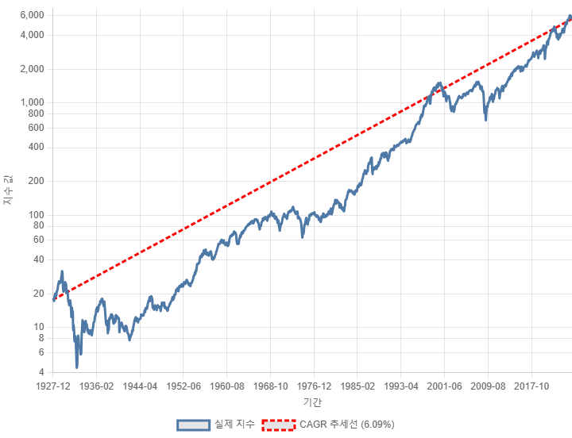
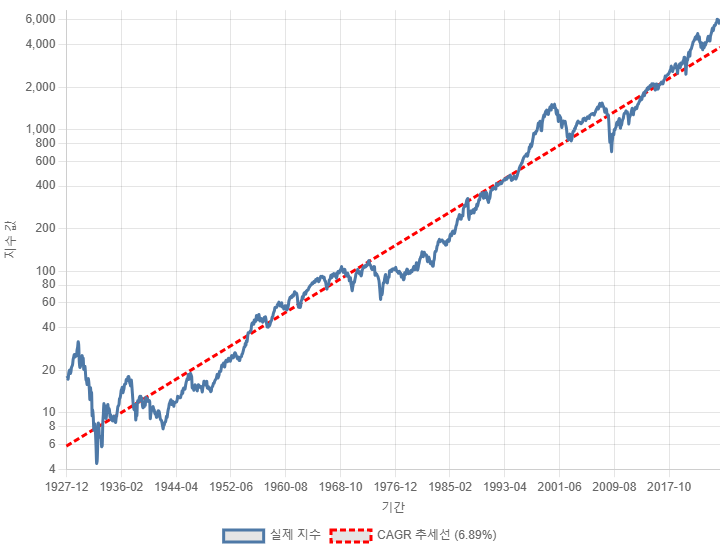
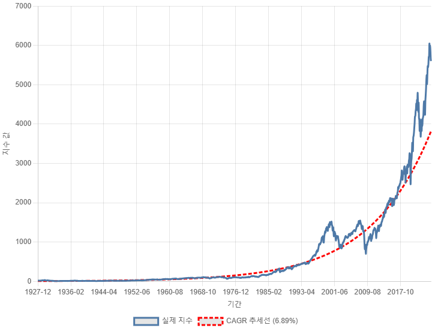
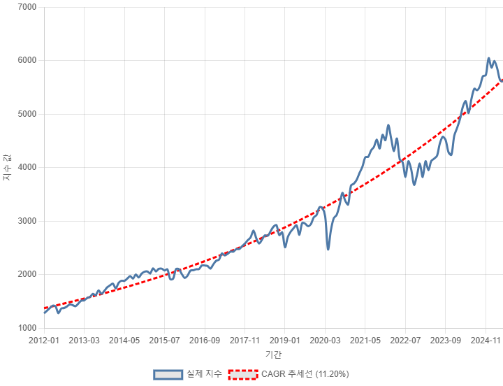

S&P500 지수는 지난 100년간 미국 경제를 대표하며 성장해 왔습니다. 하지만 그 상승률을 평가하는 방식에 따라, 우리가 받아들이는 메시지는 달라질 수 있습니다. 이 글에서는 복리 수익률(CAGR)의 계산 방식 차이, Y축 스케일 선택이 미치는 영향, 그리고 시기별 추세 변화를 정밀하게 분석합니다.
단순 방식은 특정 구간의 시작 가격과 종료 가격만을 이용하여 CAGR을 계산합니다. 계산이 빠르고 직관적이지만, 중간 구간의 변동성이나 일시적 급등락을 고려하지 못한다는 약점이 있습니다.
반면 로그 선형 회귀 기반 데이터 피팅은 전체 기간의 수많은 지점을 고려하여 추세선을 그립니다. 아래는 같은 구간의 회귀 기반 추세입니다.
전체 추세의 기울기를 기반으로 한 회귀 방식은 지수의 전반적 성장률을 대표하는 지표로써 더 신뢰성이 높습니다.
시계열 데이터를 시각화할 때 Y축의 스케일은 인식에 큰 영향을 미칩니다.
위 그림처럼 선형 스케일에서는 최근 급등이 강조되고, 과거의 변화는 거의 느껴지지 않습니다. 이는 과거 데이터를 왜곡하여 해석할 가능성을 높입니다.
로그 스케일은 모든 백분율 변화를 동일한 간격으로 표시하여 장기 투자에 적합한 시각화를 제공합니다.
→ 100 → 200과 1,000 → 2,000은 로그 스케일에서 동일한 거리로 표현됩니다. 이 때문에 장기 추세의 기울기를 정확하게 비교할 수 있습니다.
1928~2025년 전체 데이터를 보면 CAGR은 약 6.89%입니다. 그러나 2012년 이후의 10년간 데이터를 보면 그 수치는 11.2%로 대폭 상승합니다.
이 차이는 단순히 기술주 중심의 상승 때문만은 아닙니다. 저금리, 양적완화, ETF 확산 등 구조적 변화가 시장의 상승 속도를 가속화시킨 것입니다.
결국, 동일한 분석 기법이라도 적용 구간에 따라 전혀 다른 결론에 도달할 수 있습니다. 구간 선택은 반드시 명시되어야 합니다.
명목 CAGR은 실제 지수 상승률을 나타내지만, 인플레이션을 반영하지 않습니다. 예를 들어, 1970년대의 7% CAGR은 실질적으로 마이너스 수익일 수 있습니다.
이에 따라 실질 수익률 = 명목 수익률 - 평균 인플레이션률 로 보정할 필요가 있으며, 장기 투자 판단에서는 필수적인 요소입니다.